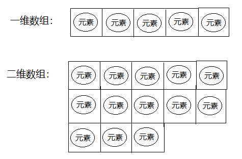
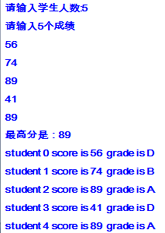
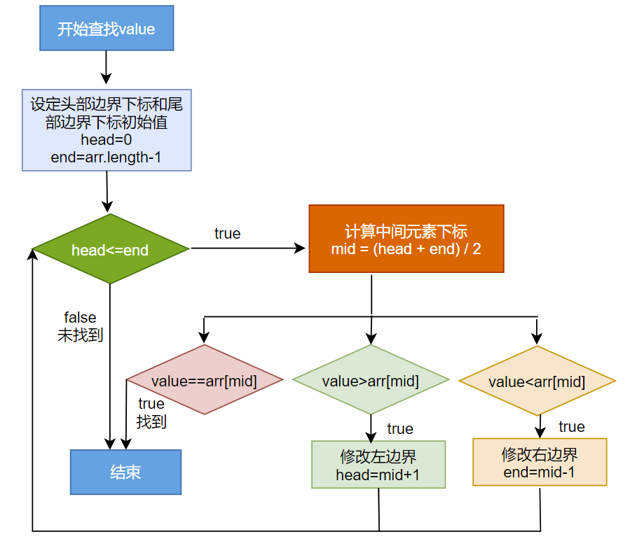
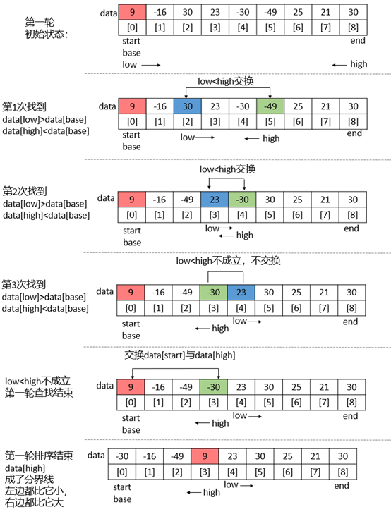
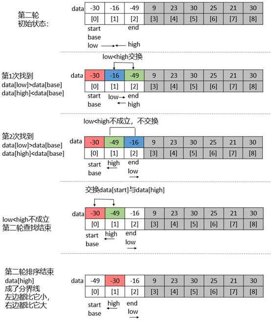

第05章_数组
本章专题与脉络

1. 数组的概述
1.1 为什么需要数组
需求分析1：
需要统计某公司50个员工的工资情况，例如计算平均工资、找到最高工资等。用之前知识，首先需要声明50个变量来分别记录每位员工的工资，这样会很麻烦。因此我们可以将所有的数据全部存储到一个容器中统一管理，并使用容器进行计算。
需求分析2：
容器的概念：
- 生活中的容器：水杯（装水等液体），衣柜（装衣服等物品），集装箱（装货物等）。
- 程序中的容器：将多个数据存储到一起，每个数据称为该容器的元素。
1.2 数组的概念
数组(Array)，是多个相同类型数据按一定顺序排列的集合，并使用一个名字命名，并通过编号的方式对这些数据进行统一管理。
数组中的概念
- 数组名
- 下标（或索引）
- 元素
- 数组的长度

数组的特点：
- 数组本身是
引用数据类型，而数组中的元素可以是任何数据类型，包括基本数据类型和引用数据类型。 - 创建数组对象会在内存中开辟一整块
连续的空间。占据的空间的大小，取决于数组的长度和数组中元素的类型。 - 数组中的元素在内存中是依次紧密排列的，有序的。
- 数组，一旦初始化完成，其长度就是确定的。数组的
长度一旦确定，就不能修改。 - 我们可以直接通过下标(或索引)的方式调用指定位置的元素，速度很快。
- 数组名中引用的是这块连续空间的首地址。
1.3 数组的分类
1、按照元素类型分：
- 基本数据类型元素的数组：每个元素位置存储基本数据类型的值
- 引用数据类型元素的数组：每个元素位置存储对象（本质是存储对象的首地址）（在面向对象部分讲解）
2、按照维度分：
- 一维数组：存储一组数据
- 二维数组：存储多组数据，相当于二维表，一行代表一组数据，只是这里的二维表每一行长度不要求一样。

2. 一维数组的使用
2.1 一维数组的声明
格式：
//推荐
元素的数据类型[] 一维数组的名称;
//不推荐
元素的数据类型 一维数组名[];举例：
int[] arr;
int arr1[];
double[] arr2;
String[] arr3; //引用类型变量数组数组的声明，需要明确：
（1）数组的维度：在Java中数组的符号是[]，[]表示一维，[][]表示二维。
（2）数组的元素类型：即创建的数组容器可以存储什么数据类型的数据。元素的类型可以是任意的Java的数据类型。例如：int、String、Student等。
（3）数组名：就是代表某个数组的标识符，数组名其实也是变量名，按照变量的命名规范来命名。数组名是个引用数据类型的变量，因为它代表一组数据。
举例：
public class ArrayTest1 {
public static void main(String[] args) {
//比如，要存储一个小组的成绩
int[] scores;
int grades[];
// System.out.println(scores);//未初始化不能使用
//比如，要存储一组字母
char[] letters;
//比如，要存储一组姓名
String[] names;
//比如，要存储一组价格
double[] prices;
}
}注意：Java语言中声明数组时不能指定其长度(数组中元素的个数)。 例如： int a[5]; //非法
2.2 一维数组的初始化
2.2.1 静态初始化
如果数组变量的初始化和数组元素的赋值操作同时进行，那就称为静态初始化。
静态初始化，本质是用静态数据（编译时已知）为数组初始化。此时数组的长度由静态数据的个数决定。
一维数组声明和静态初始化格式1：
数据类型[] 数组名 = new 数据类型[]{元素1,元素2,元素3,...}; 或 数据类型[] 数组名; 数组名 = new 数据类型[]{元素1,元素2,元素3,...};- new：关键字，创建数组使用的关键字。因为数组本身是引用数据类型，所以要用new创建数组实体。
例如，定义存储1，2，3，4，5整数的数组容器。
int[] arr = new int[]{1,2,3,4,5};//正确
//或
int[] arr;
arr = new int[]{1,2,3,4,5};//正确- 一维数组声明和静态初始化格式2：
数据类型[] 数组名 = {元素1,元素2,元素3...};//必须在一个语句中完成，不能分成两个语句写例如，定义存储1，2，3，4，5整数的数组容器
int[] arr = {1,2,3,4,5};//正确
int[] arr;
arr = {1,2,3,4,5};//错误举例：
public class ArrayTest2 {
public static void main(String[] args) {
int[] arr = {1,2,3,4,5};//右边不需要写new int[]
int[] nums;
nums = new int[]{10,20,30,40}; //声明和初始化在两个语句完成，就不能使用new int[]
char[] word = {'h','e','l','l','o'};
String[] heros = {"袁隆平","邓稼先","钱学森"};
System.out.println("arr数组：" + arr);//arr数组：[I@1b6d3586
System.out.println("nums数组：" + nums);//nums数组：[I@4554617c
System.out.println("word数组：" + word);//word数组：[C@74a14482
System.out.println("heros数组：" + heros);//heros数组：[Ljava.lang.String;@1540e19d
}
}2.2.2 动态初始化
数组变量的初始化和数组元素的赋值操作分开进行，即为动态初始化。
动态初始化中，只确定了元素的个数（即数组的长度），而元素值此时只是默认值，还并未真正赋自己期望的值。真正期望的数据需要后续单独一个一个赋值。
格式：
数组存储的元素的数据类型[] 数组名字 = new 数组存储的元素的数据类型[长度];
或
数组存储的数据类型[] 数组名字;
数组名字 = new 数组存储的数据类型[长度];[长度]：数组的长度，表示数组容器中可以最多存储多少个元素。
注意：数组有定长特性，长度一旦指定，不可更改。和水杯道理相同，买了一个2升的水杯，总容量就是2升是固定的。
举例1：正确写法
int[] arr = new int[5];
int[] arr;
arr = new int[5];
举例2：错误写法
int[] arr = new int[5]{1,2,3,4,5};//错误的，后面有{}指定元素列表，就不需要在[]中指定元素个数了。2.3 一维数组的使用
2.3.1 数组的长度
- 数组的元素总个数，即数组的长度
- 每个数组都有一个属性length指明它的长度，例如：arr.length 指明数组arr的长度(即元素个数)
- 每个数组都具有长度，而且一旦初始化，其长度就是确定，且是不可变的。
2.3.2 数组元素的引用
如何表示数组中的一个元素？
每一个存储到数组的元素，都会自动的拥有一个编号，从0开始，这个自动编号称为数组索引(index)或下标，可以通过数组的索引/下标访问到数组中的元素。
数组名[索引/下标]数组的下标范围？
Java中数组的下标从[0]开始，下标范围是[0, 数组的长度-1]，即[0, 数组名.length-1]
数组元素下标可以是整型常量或整型表达式。如a[3] , b[i] , c[6*i];
举例
public class ArrayTest3 {
public static void main(String[] args) {
int[] arr = {1,2,3,4,5};
System.out.println("arr数组的长度：" + arr.length);
System.out.println("arr数组的第1个元素：" + arr[0]);//下标从0开始
System.out.println("arr数组的第2个元素：" + arr[1]);
System.out.println("arr数组的第3个元素：" + arr[2]);
System.out.println("arr数组的第4个元素：" + arr[3]);
System.out.println("arr数组的第5个元素：" + arr[4]);
//修改第1个元素的值
//此处arr[0]相当于一个int类型的变量
arr[0] = 100;
System.out.println("arr数组的第1个元素：" + arr[0]);
}
}2.4 一维数组的遍历
将数组中的每个元素分别获取出来，就是遍历。for循环与数组的遍历是绝配。
举例1
public class ArrayTest4 {
public static void main(String[] args) {
int[] arr = new int[]{1,2,3,4,5};
//打印数组的属性，输出结果是5
System.out.println("数组的长度：" + arr.length);
//遍历输出数组中的元素
System.out.println("数组的元素有：");
for(int i=0; i<arr.length; i++){
System.out.println(arr[i]);
}
}
}举例2
public class ArrayTest5 {
public static void main(String[] args) {
int[] arr = new int[5];
System.out.println("arr数组的长度：" + arr.length);
System.out.print("存储数据到arr数组之前：[");
for (int i = 0; i < arr.length; i++) {
if(i==0){
System.out.print(arr[i]);
}else{
System.out.print("," + arr[i]);
}
}
System.out.println("]");
//初始化
/*
arr[0] = 2;
arr[1] = 4;
arr[2] = 6;
arr[3] = 8;
arr[4] = 10;
*/
for (int i = 0; i < arr.length; i++) {
arr[i] = (i+1) * 2;
}
System.out.print("存储数据到arr数组之后：[");
for (int i = 0; i < arr.length; i++) {
if(i==0){
System.out.print(arr[i]);
}else{
System.out.print("," + arr[i]);
}
}
System.out.println("]");
}
}2.5 数组元素的默认值
数组是引用类型，当我们使用动态初始化方式创建数组时，元素值只是默认值。例如：
public class ArrayTest6 {
public static void main(String argv[]){
int a[]= new int[5];
System.out.println(a[3]); //a[3]的默认值为0
}
} 对于基本数据类型而言，默认初始化值各有不同。
对于引用数据类型而言，默认初始化值为null（注意与0不同！)

public class ArrayTest7 {
public static void main(String[] args) {
//存储26个字母
char[] letters = new char[26];
System.out.println("letters数组的长度：" + letters.length);
System.out.print("存储字母到letters数组之前：[");
for (int i = 0; i < letters.length; i++) {
if(i==0){
System.out.print(letters[i]);
}else{
System.out.print("," + letters[i]);
}
}
System.out.println("]");
//存储5个姓名
String[] names = new String[5];
System.out.println("names数组的长度：" + names.length);
System.out.print("存储姓名到names数组之前：[");
for (int i = 0; i < names.length; i++) {
if(i==0){
System.out.print(names[i]);
}else{
System.out.print("," + names[i]);
}
}
System.out.println("]");
}
}3. 一维数组内存分析
3.1 Java虚拟机的内存划分
为了提高运算效率，就对空间进行了不同区域的划分，因为每一片区域都有特定的处理数据方式和内存管理方式。

| 区域名称 | 作用 |
|---|---|
虚拟机栈 |
用于存储正在执行的每个Java方法的局部变量表等。局部变量表存放了编译期可知长度 的各种基本数据类型、对象引用，方法执行完，自动释放。 |
堆内存 |
存储对象（包括数组对象），new来创建的，都存储在堆内存。 |
方法区 |
存储已被虚拟机加载的类信息、常量、（静态变量）、即时编译器编译后的代码等数据。 |
| 本地方法栈 | 当程序中调用了native的本地方法时，本地方法执行期间的内存区域 |
| 程序计数器 | 程序计数器是CPU中的寄存器，它包含每一个线程下一条要执行的指令的地址 |
3.2 一维数组在内存中的存储
1、一个一维数组内存图
public static void main(String[] args) {
int[] arr = new int[3];
System.out.println(arr);//[I@5f150435
}

2、数组下标为什么是0开始
因为第一个元素距离数组首地址间隔0个单元格。
3、两个一维数组内存图
两个数组独立
public static void main(String[] args) {
int[] arr = new int[3];
int[] arr2 = new int[2];
System.out.println(arr);
System.out.println(arr2);
}

4、两个变量指向一个一维数组
两个数组变量本质上代表同一个数组。
public static void main(String[] args) {
// 定义数组，存储3个元素
int[] arr = new int[3];
//数组索引进行赋值
arr[0] = 5;
arr[1] = 6;
arr[2] = 7;
//输出3个索引上的元素值
System.out.println(arr[0]);
System.out.println(arr[1]);
System.out.println(arr[2]);
//定义数组变量arr2，将arr的地址赋值给arr2
int[] arr2 = arr;
arr2[1] = 9;
System.out.println(arr[1]);
}
4. 一维数组的应用
案例1：升景坊单间短期出租4个月，550元/月（水电煤公摊，网费35元/月），空调、卫生间、厨房齐全。屋内均是IT行业人士，喜欢安静。所以要求来租者最好是同行或者刚毕业的年轻人，爱干净、安静。
public class ArrayTest {
public static void main(String[] args) {
int[] arr = new int[]{8,2,1,0,3};
int[] index = new int[]{2,0,3,2,4,0,1,3,2,3,3};
String tel = "";
for(int i = 0;i < index.length;i++){
tel += arr[index[i]];
}
System.out.println("联系方式：" + tel);
}
}
案例2：输出英文星期几
用一个数组，保存星期一到星期天的7个英语单词，从键盘输入1-7，显示对应的单词
{“Monday”,”Tuesday”,”Wednesday”,”Thursday”,”Friday”,”Saturday”,”Sunday”}
import java.util.Scanner;
/**
* @author 尚硅谷-宋红康
* @create 14:37
*/
public class WeekArrayTest {
public static void main(String[] args) {
//1. 声明并初始化星期的数组
String[] weeks = {"Monday","Tuesday","Wednesday","Thursday","Friday","Saturday","Sunday"};
//2. 使用Scanner从键盘获取1-7范围的整数
Scanner scanner = new Scanner(System.in);
System.out.println("请输入[1-7]范围的整数：");
int number = scanner.nextInt();
if(number < 1 || number > 7){
System.out.println("你输入的输入非法");
}else{
//3. 根据输入的整数，到数组中相应的索引位置获取指定的元素（即：星期几）
System.out.println("对应的星期为：" + weeks[number - 1]);
}
scanner.close();
}
}案例3：从键盘读入学生成绩，找出最高分，并输出学生成绩等级。
成绩>=最高分-10 等级为’A’
成绩>=最高分-20 等级为’B’
成绩>=最高分-30 等级为’C’
其余 等级为’D’
提示：先读入学生人数，根据人数创建int数组，存放学生成绩。
/**
* @author 尚硅谷-宋红康
* @create 14:55
*/
public class ScoreTest1 {
public static void main(String[] args) {
//1. 根据提示，获取学生人数
System.out.print("请输入学生人数：");
Scanner scanner = new Scanner(System.in);
int count = scanner.nextInt();
//2. 根据学生人数，创建指定长度的数组 (使用动态初始化)
int[] scores = new int[count];
//3. 使用循环，依次给数组的元素赋值
int maxScore = 0; //记录最高分
System.out.println("请输入" + count + "个成绩");
for (int i = 0; i < scores.length; i++) {
scores[i] = scanner.nextInt();
//4. 获取数组中元素的最大值，即为最高分
if(maxScore < scores[i]){
maxScore = scores[i];
}
}
System.out.println("最高分是：" + maxScore);
//5. 遍历数组元素，输出各自的分数，并根据其分数与最高分的差值，获取各自的等级
char grade;
for (int i = 0; i < scores.length; i++) {
if(scores[i] >= maxScore - 10){
grade = 'A';
}else if(scores[i] >= maxScore - 20){
grade = 'B';
}else if(scores[i] >= maxScore - 30){
grade = 'C';
}else{
grade = 'D';
}
System.out.println("student " + i + " socre is " + scores[i] + ", grade is " + grade);
}
//关闭资源
scanner.close();
}
}5. 多维数组的使用
5.1 概述
Java 语言里提供了支持多维数组的语法。
如果说可以把一维数组当成几何中的
线性图形，那么二维数组就相当于是一个表格，像Excel中的表格、围棋棋盘一样。应用举例1：
某公司2022年全年各个月份的销售额进行登记。按月份存储，可以使用一维数组。如下：
int[] monthData = new int[]{23,43,22,34,55,65,44,67,45,78,67,66};如果改写为按
季度为单位存储怎么办呢？int[][] quarterData = new int[][]{{23,43,22},{34,55,65},{44,67,45},{78,67,66}};- 应用举例2：
高一年级三个班级均由多个学生姓名构成一个个数组。如下：
String[] class1 = new String[]{"段誉","令狐冲","任我行"};
String[] class2 = new String[]{"张三丰","周芷若"};
String[] class3 = new String[]{"赵敏","张无忌","韦小宝","杨过"};
那从整个年级看，我们可以声明一个二维数组。如下：
String[][] grade = new String[][]{{"段誉","令狐冲","任我行"},{"张三丰","周芷若"},{"赵敏","张无忌","韦小宝","杨过"}};- 应用举例3：
蓝框的几个元素，可以使用一维数组来存储。但现在发现每个元素下还有下拉框，其内部还有元素，那就需要使用二维数组来存储：

使用说明
- 对于二维数组的理解，可以看成是一维数组array1又作为另一个一维数组array2的元素而存在。
- 其实，从数组底层的运行机制来看，其实没有多维数组。
5.2 声明与初始化
5.2.1 声明
二维数组声明的语法格式：
//推荐
元素的数据类型[][] 二维数组的名称;
//不推荐
元素的数据类型 二维数组名[][];
//不推荐
元素的数据类型[] 二维数组名[];例如：
public class Test20TwoDimensionalArrayDefine {
public static void main(String[] args) {
//存储多组成绩
int[][] grades;
//存储多组姓名
String[][] names;
}
}面试：
int[] x, y[];
//x是一维数组，y是二维数组5.2.2 静态初始化
格式：
int[][] arr = new int[][]{{3,8,2},{2,7},{9,0,1,6}};定义一个名称为arr的二维数组，二维数组中有三个一维数组
- 每一个一维数组中具体元素也都已初始化
- 第一个一维数组 arr[0] = {3,8,2};
- 第二个一维数组 arr[1] = {2,7};
- 第三个一维数组 arr[2] = {9,0,1,6};
- 第三个一维数组的长度表示方式：arr[2].length;
- 注意特殊写法情况：int[] x,y[]; x是一维数组，y是二维数组。
- 举例1：
int[][] arr = {{1,2,3},{4,5,6},{7,8,9,10}};//声明与初始化必须在一句完成
int[][] arr = new int[][]{{1,2,3},{4,5,6},{7,8,9,10}};
int[][] arr;
arr = new int[][]{{1,2,3},{4,5,6},{7,8,9,10}};
arr = new int[3][3]{{1,2,3},{4,5,6},{7,8,9,10}};//错误，静态初始化右边new 数据类型[][]中不能写数字- 举例2：
public class TwoDimensionalArrayInitialize {
public static void main(String[] args) {
//存储多组成绩
int[][] grades = {
{89,75,99,100},
{88,96,78,63,100,86},
{56,63,58},
{99,66,77,88}
};
//存储多组姓名
String[][] names = {
{"张三","李四", "王五", "赵六"},
{"刘备","关羽","张飞","诸葛亮","赵云","马超"},
{"曹丕","曹植","曹冲"},
{"孙权","周瑜","鲁肃","黄盖"}
};
}
}5.2.3 动态初始化
如果二维数组的每一个数据，甚至是每一行的列数，需要后期单独确定，那么就只能使用动态初始化方式了。动态初始化方式分为两种格式：
格式1：规则二维表：每一行的列数是相同的
//（1）确定行数和列数
元素的数据类型[][] 二维数组名 = new 元素的数据类型[m][n];
//其中，m:表示这个二维数组有多少个一维数组。或者说一共二维表有几行
//其中，n:表示每一个一维数组的元素有多少个。或者说每一行共有一个单元格
//此时创建完数组，行数、列数确定，而且元素也都有默认值
//（2）再为元素赋新值
二维数组名[行下标][列下标] = 值;举例：
int[][] arr = new int[3][2];定义了名称为arr的二维数组
二维数组中有3个一维数组
每一个一维数组中有2个元素
一维数组的名称分别为arr[0], arr[1], arr[2]
给第一个一维数组1脚标位赋值为78写法是：
arr[0][1] = 78;
格式2：不规则：每一行的列数不一样
//（1）先确定总行数
元素的数据类型[][] 二维数组名 = new 元素的数据类型[总行数][];
//此时只是确定了总行数，每一行里面现在是null
//（2）再确定每一行的列数，创建每一行的一维数组
二维数组名[行下标] = new 元素的数据类型[该行的总列数];
//此时已经new完的行的元素就有默认值了，没有new的行还是null
//(3)再为元素赋值
二维数组名[行下标][列下标] = 值;举例：
int[][] arr = new int[3][];- 二维数组中有3个一维数组。
- 每个一维数组都是默认初始化值null (注意：区别于格式1）
- 可以对这个三个一维数组分别进行初始化：arr[0] = new int[3]; arr[1] = new int[1]; arr[2] = new int[2];
- 注：
int[][]arr = new int[][3];//非法
练习：
/*
1
2 2
3 3 3
4 4 4 4
5 5 5 5 5
*/
public class Test25DifferentElementCount {
public static void main(String[] args){
//1、声明一个二维数组，并且确定行数
//因为每一行的列数不同，这里无法直接确定列数
int[][] arr = new int[5][];
//2、确定每一行的列数
for(int i=0; i<arr.length; i++){
/*
arr[0] 的列数是1
arr[1] 的列数是2
arr[2] 的列数是3
arr[3] 的列数是4
arr[4] 的列数是5
*/
arr[i] = new int[i+1];
}
//3、确定元素的值
for(int i=0; i<arr.length; i++){
for(int j=0; j<arr[i].length; j++){
arr[i][j] = i+1;
}
}
//4、遍历显示
for(int i=0; i<arr.length; i++){
for(int j=0; j<arr[i].length; j++){
System.out.print(arr[i][j] + " ");
}
System.out.println();
}
}
}5.3 数组的长度和角标
- 二维数组的长度/行数：二维数组名.length
- 二维数组的某一行：二维数组名[行下标]，此时相当于获取其中一组数据。它本质上是一个一维数组。行下标的范围：[0, 二维数组名.length-1]。此时把二维数组看成一维数组的话，元素是行对象。
- 某一行的列数：二维数组名[行下标].length，因为二维数组的每一行是一个一维数组。
- 某一个元素：二维数组名[行下标][列下标]，即先确定行/组，再确定列。
public class Test22TwoDimensionalArrayUse {
public static void main(String[] args){
//存储3个小组的学员的成绩，分开存储，使用二维数组。
/*
int[][] scores1;
int scores2[][];
int[] scores3[];*/
int[][] scores = {
{85,96,85,75},
{99,96,74,72,75},
{52,42,56,75}
};
System.out.println(scores);//[[I@15db9742
System.out.println("一共有" + scores.length +"组成绩.");
//[[：代表二维数组，I代表元素类型是int
System.out.println(scores[0]);//[I@6d06d69c
//[：代表一维数组，I代表元素类型是int
System.out.println(scores[1]);//[I@7852e922
System.out.println(scores[2]);//[I@4e25154f
//System.out.println(scores[3]);//ArrayIndexOutOfBoundsException: 3
System.out.println("第1组有" + scores[0].length +"个学员.");
System.out.println("第2组有" + scores[1].length +"个学员.");
System.out.println("第3组有" + scores[2].length +"个学员.");
System.out.println("第1组的每一个学员成绩如下：");
//第一行的元素
System.out.println(scores[0][0]);//85
System.out.println(scores[0][1]);//96
System.out.println(scores[0][2]);//85
System.out.println(scores[0][3]);//75
//System.out.println(scores[0][4]);//java.lang.ArrayIndexOutOfBoundsException: 4
}
}5.4 二维数组的遍历
- 格式：
for(int i=0; i<二维数组名.length; i++){ //二维数组对象.length
for(int j=0; j<二维数组名[i].length; j++){//二维数组行对象.length
System.out.print(二维数组名[i][j]);
}
System.out.println();
}- 举例：
public class Test23TwoDimensionalArrayIterate {
public static void main(String[] args) {
//存储3个小组的学员的成绩，分开存储，使用二维数组。
int[][] scores = {
{85,96,85,75},
{99,96,74,72,75},
{52,42,56,75}
};
System.out.println("一共有" + scores.length +"组成绩.");
for (int i = 0; i < scores.length; i++) {
System.out.print("第" + (i+1) +"组有" + scores[i].length + "个学员，成绩如下：");
for (int j = 0; j < scores[i].length; j++) {
System.out.print(scores[i][j]+"\t");
}
System.out.println();
}
}
}5.5 内存解析
二维数组本质上是元素类型是一维数组的一维数组。
int[][] arr = {
{1},
{2,2},
{3,3,3},
{4,4,4,4},
{5,5,5,5,5}
};
//1、声明二维数组，并确定行数和列数
int[][] arr = new int[4][5];
//2、确定元素的值
for (int i = 0; i < arr.length; i++) {
for (int j = 0; j < arr.length; j++) {
arr[i][j] = i + 1;
}
}
//1、声明一个二维数组，并且确定行数
//因为每一行的列数不同，这里无法直接确定列数
int[][] arr = new int[5][];
//2、确定每一行的列数
for(int i=0; i<arr.length; i++){
/*
arr[0] 的列数是1
arr[1] 的列数是2
arr[2] 的列数是3
arr[3] 的列数是4
arr[4] 的列数是5
*/
arr[i] = new int[i+1];
}
//3、确定元素的值
for(int i=0; i<arr.length; i++){
for(int j=0; j<arr[i].length; j++){
arr[i][j] = i+1;
}
}
5.6 应用举例
案例1：获取arr数组中所有元素的和。
提示：使用for的嵌套循环即可。
案例2：声明：int[] x,y[]; 在给x,y变量赋值以后，以下选项允许通过编译的是：
声明：int[] x,y[]; 在给x,y变量赋值以后，以下选项允许通过编译的是：
a) x[0] = y; //no
b) y[0] = x; //yes
c) y[0][0] = x; //no
d) x[0][0] = y; //no
e) y[0][0] = x[0]; //yes
f) x = y; //no
提示：
一维数组：int[] x 或者int x[]
二维数组：int[][] y 或者 int[] y[] 或者 int y[][]
案例3：使用二维数组打印一个 10 行杨辉三角。
提示：
第一行有 1 个元素, 第 n 行有 n 个元素
每一行的第一个元素和最后一个元素都是 1
从第三行开始, 对于非第一个元素和最后一个元素的元素。即：
yanghui[i][j] = yanghui[i-1][j-1] + yanghui[i-1][j];
/**
* @author 尚硅谷-宋红康
* @create 10:11
*/
public class YangHuiTest {
public static void main(String[] args) {
//1. 动态初始化的方式创建二维数组
int[][] yangHui = new int[10][];
for (int i = 0; i < yangHui.length; i++) {
yangHui[i] = new int[i + 1];
//2. 给数组元素赋值
// 2.1 给外层数组元素中的首元素和末元素赋值
yangHui[i][0] = yangHui[i][i] = 1;
//2.2 给外层数组元素中的非首元素和非末元素赋值（难）
//if(i > 1){ //从 i == 2 开始执行
for(int j = 1;j < yangHui[i].length - 1;j++){ //非首元素和非末元素的角标范围
yangHui[i][j] = yangHui[i-1][j-1] + yangHui[i-1][j];
}
//}
}
//3. 遍历二维数组
for (int i = 0; i < yangHui.length; i++) {
for (int j = 0; j < yangHui[i].length; j++) {
System.out.print(yangHui[i][j] + "\t");
}
System.out.println();
}
}
}6. 数组的常见算法
6.1 数值型数组特征值统计
- 这里的特征值涉及到：平均值、最大值、最小值、总和等
举例1：数组统计：求总和、均值
public class TestArrayElementSum {
public static void main(String[] args) {
int[] arr = {4,5,6,1,9};
//求总和、均值
int sum = 0;//因为0加上任何数都不影响结果
for(int i=0; i<arr.length; i++){
sum += arr[i];
}
double avg = (double)sum/arr.length;
System.out.println("sum = " + sum);
System.out.println("avg = " + avg);
}
}举例2：求数组元素的总乘积
public class TestArrayElementMul {
public static void main(String[] args) {
int[] arr = {4,5,6,1,9};
//求总乘积
long result = 1;//因为1乘以任何数都不影响结果
for(int i=0; i<arr.length; i++){
result *= arr[i];
}
System.out.println("result = " + result);
}
}举例3：求数组元素中偶数的个数
public class TestArrayElementEvenCount {
public static void main(String[] args) {
int[] arr = {4,5,6,1,9};
//统计偶数个数
int evenCount = 0;
for(int i=0; i<arr.length; i++){
if(arr[i]%2==0){
evenCount++;
}
}
System.out.println("evenCount = " + evenCount);
}
}举例4：求数组元素的最大值

public class TestArrayMax {
public static void main(String[] args) {
int[] arr = {4,5,6,1,9};
//找最大值
int max = arr[0];
for(int i=1; i<arr.length; i++){//此处i从1开始，是max不需要与arr[0]再比较一次了
if(arr[i] > max){
max = arr[i];
}
}
System.out.println("max = " + max);
}
}举例5：找最值及其第一次出现的下标
public class TestMaxIndex {
public static void main(String[] args) {
int[] arr = {4,5,6,1,9};
//找最大值以及第一个最大值下标
int max = arr[0];
int index = 0;
for(int i=1; i<arr.length; i++){
if(arr[i] > max){
max = arr[i];
index = i;
}
}
System.out.println("max = " + max);
System.out.println("index = " + index);
}
}举例6：找最值及其所有最值的下标
public class Test13AllMaxIndex {
public static void main(String[] args) {
int[] arr = {4,5,6,1,9,9,3};
//找最大值
int max = arr[0];
for(int i=1; i<arr.length; i++){
if(arr[i] > max){
max = arr[i];
}
}
System.out.println("最大值是：" + max);
System.out.print("最大值的下标有：");
//遍历数组，看哪些元素和最大值是一样的
for(int i=0; i<arr.length; i++){
if(max == arr[i]){
System.out.print(i+"\t");
}
}
System.out.println();
}
}优化
public class Test13AllMaxIndex2 {
public static void main(String[] args) {
int[] arr = {4,5,6,1,9,9,3};
//找最大值
int max = arr[0];
String index = "0";
for(int i=1; i<arr.length; i++){
if(arr[i] > max){
max = arr[i];
index = i + "";
}else if(arr[i] == max){
index += "," + i;
}
}
System.out.println("最大值是" + max);
System.out.println("最大值的下标是[" + index+"]");
}
}举例7(难)：输入一个整形数组，数组里有正数也有负数。数组中连续的一个或多个整数组成一个子数组，每个子数组都有一个和。求所有子数组的和的最大值。要求时间复杂度为O(n)。
例如：输入的数组为1, -2, 3, -10, -4, 7, 2, -5，和最大的子数组为3, 10, -4, 7, 2，因此输出为该子数组的和18。
public class Test5 {
public static void main(String[] args) {
int[] arr = new int[]{1, -2, 3, 10, -4, 7, 2, -5};
int i = getGreatestSum(arr);
System.out.println(i);
}
public static int getGreatestSum(int[] arr){
int greatestSum = 0;
if(arr == null || arr.length == 0){
return 0;
}
int temp = greatestSum;
for(int i = 0;i < arr.length;i++){
temp += arr[i];
if(temp < 0){
temp = 0;
}
if(temp > greatestSum){
greatestSum = temp;
}
}
if(greatestSum == 0){
greatestSum = arr[0];
for(int i = 1;i < arr.length;i++){
if(greatestSum < arr[i]){
greatestSum = arr[i];
}
}
}
return greatestSum;
}
}举例8：评委打分
分析以下需求，并用代码实现：
（1）在编程竞赛中，有10位评委为参赛的选手打分，分数分别为：5，4，6，8，9，0，1，2，7，3
（2）求选手的最后得分（去掉一个最高分和一个最低分后其余8位评委打分的平均值）
/**
* @author 尚硅谷-宋红康
* @create 10:03
*/
public class ArrayExer {
public static void main(String[] args) {
int[] scores = {5,4,6,8,9,0,1,2,7,3};
int max = scores[0];
int min = scores[0];
int sum = 0;
for(int i = 0;i < scores.length;i++){
if(max < scores[i]){
max = scores[i];
}
if(min > scores[i]){
min = scores[i];
}
sum += scores[i];
}
double avg = (double)(sum - max - min) / (scores.length - 2);
System.out.println("选手去掉最高分和最低分之后的平均分为：" + avg);
}
}6.2 数组元素的赋值与数组复制
举例1：杨辉三角（见二维数组课后案例）
举例2：使用简单数组
(1)创建一个名为ArrayTest的类，在main()方法中声明array1和array2两个变量，他们是int[]类型的数组。
(2)使用大括号{}，把array1初始化为8个素数：2,3,5,7,11,13,17,19。
(3)显示array1的内容。
(4)赋值array2变量等于array1，修改array2中的偶索引元素，使其等于索引值(如array[0]=0,array[2]=2)。打印出array1。 array2 = array1;
思考：array1和array2是什么关系？
拓展：修改题目，实现array2对array1数组的复制


举例3：一个数组，让数组的每个元素去除第一个元素，得到的商作为被除数所在位置的新值。
public class Test3 {
public static void main(String[] args) {
int[] arr = new int[]{12,43,65,3,-8,64,2};
// for(int i = 0;i < arr.length;i++){
// arr[i] = arr[i] / arr[0];
// }
for(int i = arr.length -1;i >= 0;i--){
arr[i] = arr[i] / arr[0];
}
//遍历arr
for(int i = 0;i < arr.length;i++){
System.out.print(arr[i] + " ");
}
}
}举例4：创建一个长度为6的int型数组，要求数组元素的值都在1-30之间，且是随机赋值。同时，要求元素的值各不相同。
public class Test4 {
// 5-67 Math.random() * 63 + 5;
@Test
public void test1() {
int[] arr = new int[6];
for (int i = 0; i < arr.length; i++) {// [0,1) [0,30) [1,31)
arr[i] = (int) (Math.random() * 30) + 1;
boolean flag = false;
while (true) {
for (int j = 0; j < i; j++) {
if (arr[i] == arr[j]) {
flag = true;
break;
}
}
if (flag) {
arr[i] = (int) (Math.random() * 30) + 1;
flag = false;
continue;
}
break;
}
}
for (int i = 0; i < arr.length; i++) {
System.out.println(arr[i]);
}
}
//更优的方法
@Test
public void test2(){
int[] arr = new int[6];
for (int i = 0; i < arr.length; i++) {// [0,1) [0,30) [1,31)
arr[i] = (int) (Math.random() * 30) + 1;
for (int j = 0; j < i; j++) {
if (arr[i] == arr[j]) {
i--;
break;
}
}
}
for (int i = 0; i < arr.length; i++) {
System.out.println(arr[i]);
}
}
}举例5：扑克牌
案例：遍历扑克牌
遍历扑克牌，效果如图所示：

提示：使用两个字符串数组，分别保存花色和点数，再用一个字符串数组保存最后的扑克牌。
String[] hua = {“黑桃”,”红桃”,”梅花”,”方片”};
String[] dian = {“A”,”2”,”3”,”4”,”5”,”6”,”7”,”8”,”9”,”10”,”J”,”Q”,”K”};
package com.atguigu3.common_algorithm.exer5;
/**
* @author 尚硅谷-宋红康
* @create 17:16
*/
public class ArrayExer05 {
public static void main(String[] args) {
String[] hua = {"黑桃","红桃","梅花","方片"};
String[] dian = {"A","2","3","4","5","6","7","8","9","10","J","Q","K"};
String[] pai = new String[hua.length * dian.length];
int k = 0;
for(int i = 0;i < hua.length;i++){
for(int j = 0;j < dian.length;j++){
pai[k++] = hua[i] + dian[j];
}
}
for (int i = 0; i < pai.length; i++) {
System.out.print(pai[i] + " ");
if(i % 13 == 12){
System.out.println();
}
}
}
}
拓展：在上述基础上，增加大王、小王。
举例6：回形数
从键盘输入一个整数（1~20） ，则以该数字为矩阵的大小，把1,2,3…n*n 的数字按照顺时针螺旋的形式填入其中。
例如： 输入数字2，则程序输出：
1 2
4 3
输入数字3，则程序输出：
1 2 3
8 9 4
7 6 5
输入数字4， 则程序输出：
1 2 3 4
12 13 14 5
11 16 15 6
10 9 8 7
//方式1
public class RectangleTest {
public static void main(String[] args) {
Scanner scanner = new Scanner(System.in);
System.out.println("输入一个数字");
int len = scanner.nextInt();
int[][] arr = new int[len][len];
int s = len * len;
/*
* k = 1:向右
* k = 2:向下
* k = 3:向左
* k = 4:向上
*/
int k = 1;
int i = 0,j = 0;
for(int m = 1;m <= s;m++){
if(k == 1){
if(j < len && arr[i][j] == 0){
arr[i][j++] = m;
}else{
k = 2;
i++;
j--;
m--;
}
}else if(k == 2){
if(i < len && arr[i][j] == 0){
arr[i++][j] = m;
}else{
k = 3;
i--;
j--;
m--;
}
}else if(k == 3){
if(j >= 0 && arr[i][j] == 0){
arr[i][j--] = m;
}else{
k = 4;
i--;
j++;
m--;
}
}else if(k == 4){
if(i >= 0 && arr[i][j] == 0){
arr[i--][j] = m;
}else{
k = 1;
i++;
j++;
m--;
}
}
}
//遍历
for(int m = 0;m < arr.length;m++){
for(int n = 0;n < arr[m].length;n++){
System.out.print(arr[m][n] + "\t");
}
System.out.println();
}
}
}//方式2
/*
01 02 03 04 05 06 07
24 25 26 27 28 29 08
23 40 41 42 43 30 09
22 39 48 49 44 31 10
21 38 47 46 45 32 11
20 37 36 35 34 33 12
19 18 17 16 15 14 13
*/
public class RectangleTest1 {
public static void main(String[] args) {
int n = 7;
int[][] arr = new int[n][n];
int count = 0; //要显示的数据
int maxX = n-1; //x轴的最大下标
int maxY = n-1; //Y轴的最大下标
int minX = 0; //x轴的最小下标
int minY = 0; //Y轴的最小下标
while(minX<=maxX) {
for(int x=minX;x<=maxX;x++) {
arr[minY][x] = ++count;
}
minY++;
for(int y=minY;y<=maxY;y++) {
arr[y][maxX] = ++count;
}
maxX--;
for(int x=maxX;x>=minX;x--) {
arr[maxY][x] = ++count;
}
maxY--;
for(int y=maxY;y>=minY;y--) {
arr[y][minX] = ++count;
}
minX++;
}
for(int i=0;i<arr.length;i++) {
for(int j=0;j<arr.length;j++) {
String space = (arr[i][j]+"").length()==1 ? "0":"";
System.out.print(space+arr[i][j]+" ");
}
System.out.println();
}
}
}6.3 数组元素的反转
实现思想：数组对称位置的元素互换。

public class TestArrayReverse1 {
public static void main(String[] args) {
int[] arr = {1,2,3,4,5};
System.out.println("反转之前：");
for (int i = 0; i < arr.length; i++) {
System.out.println(arr[i]);
}
//反转
/*
思路：首尾对应位置的元素交换
（1）确定交换几次
次数 = 数组.length / 2
（2）谁和谁交换
for(int i=0; i<次数; i++){
int temp = arr[i];
arr[i] = arr[arr.length-1-i];
arr[arr.length-1-i] = temp;
}
*/
for(int i=0; i<arr.length/2; i++){
int temp = arr[i];
arr[i] = arr[arr.length-1-i];
arr[arr.length-1-i] = temp;
}
System.out.println("反转之后：");
for (int i = 0; i < arr.length; i++) {
System.out.println(arr[i]);
}
}
}或

public class TestArrayReverse2 {
public static void main(String[] args) {
int[] arr = {1,2,3,4,5};
System.out.println("反转之前：");
for (int i = 0; i < arr.length; i++) {
System.out.println(arr[i]);
}
//反转
//左右对称位置交换
for(int left=0,right=arr.length-1; left<right; left++,right--){
//首 与 尾交换
int temp = arr[left];
arr[left] = arr[right];
arr[right] = temp;
}
System.out.println("反转之后：");
for (int i = 0; i < arr.length; i++) {
System.out.println(arr[i]);
}
}
}6.4 数组的扩容与缩容
数组的扩容
题目：现有数组 int[] arr = new int[]{1,2,3,4,5}; ，现将数组长度扩容1倍，并将10,20,30三个数据添加到arr数组中，如何操作？
public class ArrTest1 {
public static void main(String[] args) {
int[] arr = new int[]{1,2,3,4,5};
int[] newArr = new int[arr.length << 1];
for(int i = 0;i < arr.length;i++){
newArr[i] = arr[i];
}
newArr[arr.length] = 10;
newArr[arr.length + 1] = 20;
newArr[arr.length + 2] = 30;
arr = newArr;
//遍历arr
for (int i = 0; i < arr.length; i++) {
System.out.println(arr[i]);
}
}
}数组的缩容
题目：现有数组 int[] arr={1,2,3,4,5,6,7}。现需删除数组中索引为4的元素。
public class ArrTest2 {
public static void main(String[] args) {
int[] arr = {1, 2, 3, 4, 5, 6, 7};
//删除数组中索引为4的元素
int delIndex = 4;
//方案1：
/*//创建新数组
int[] newArr = new int[arr.length - 1];
for (int i = 0; i < delIndex; i++) {
newArr[i] = arr[i];
}
for (int i = delIndex + 1; i < arr.length; i++) {
newArr[i - 1] = arr[i];
}
arr = newArr;
for (int i = 0; i < arr.length; i++) {
System.out.println(arr[i]);
}*/
//方案2：
for (int i = delIndex; i < arr.length - 1; i++) {
arr[i] = arr[i + 1];
}
arr[arr.length - 1] = 0;
for (int i = 0; i < arr.length; i++) {
System.out.println(arr[i]);
}
}
}6.5 数组的元素查找
1、顺序查找
顺序查找：挨个查看
要求：对数组元素的顺序没要求
public class TestArrayOrderSearch {
//查找value第一次在数组中出现的index
public static void main(String[] args){
int[] arr = {4,5,6,1,9};
int value = 1;
int index = -1;
for(int i=0; i<arr.length; i++){
if(arr[i] == value){
index = i;
break;
}
}
if(index==-1){
System.out.println(value + "不存在");
}else{
System.out.println(value + "的下标是" + index);
}
}
}2、二分查找
举例：
实现步骤：
//二分法查找：要求此数组必须是有序的。
int[] arr3 = new int[]{-99,-54,-2,0,2,33,43,256,999};
boolean isFlag = true;
int value = 256;
//int value = 25;
int head = 0;//首索引位置
int end = arr3.length - 1;//尾索引位置
while(head <= end){
int middle = (head + end) / 2;
if(arr3[middle] == value){
System.out.println("找到指定的元素，索引为：" + middle);
isFlag = false;
break;
}else if(arr3[middle] > value){
end = middle - 1;
}else{//arr3[middle] < value
head = middle + 1;
}
}
if(isFlag){
System.out.println("未找打指定的元素");
}
6.6 数组元素排序
6.6.1 算法概述
定义
- 排序：假设含有n个记录的序列为{R1，R2，…,Rn},其相应的关键字序列为{K1，K2，…,Kn}。将这些记录重新排序为{Ri1,Ri2,…,Rin},使得相应的关键字值满足条Ki1<=Ki2<=…<=Kin,这样的一种操作称为排序。
- 通常来说，排序的目的是快速查找。
衡量排序算法的优劣：
时间复杂度：分析关键字的比较次数和记录的移动次数常见的算法时间复杂度由小到大依次为：Ο(1)＜Ο(log2n)＜Ο(n)＜Ο(nlog2n)＜Ο(n2)＜Ο(n3)＜…＜Ο(2n)＜Ο(n!)<O(nn)
空间复杂度：分析排序算法中需要多少辅助内存一个算法的空间复杂度S(n)定义为该算法所耗费的存储空间，它也是问题规模n的函数。稳定性：若两个记录A和B的关键字值相等，但排序后A、B的先后次序保持不变，则称这种排序算法是稳定的。
6.6.2 排序算法概述
排序算法分类：内部排序和外部排序
内部排序：整个排序过程不需要借助于外部存储器（如磁盘等），所有排序操作都在内存中完成。外部排序：参与排序的数据非常多，数据量非常大，计算机无法把整个排序过程放在内存中完成，必须借助于外部存储器（如磁盘）。外部排序最常见的是多路归并排序。可以认为外部排序是由多次内部排序组成。
十大内部排序算法
数组的排序算法很多，实现方式各不相同，时间复杂度、空间复杂度、稳定性也各不相同：

常见时间复杂度所消耗的时间从小到大排序：
O(1) < O(logn) < O(n) < O(nlogn) < O(n^2) < O(n^3) < O(2^n) < O(n!) < O(n^n)
注意，经常将以2为底n的对数简写成logn。

6.6.3 冒泡排序（Bubble Sort）
排序思想：
比较相邻的元素。如果第一个比第二个大（升序），就交换他们两个。
对每一对相邻元素作同样的工作，从开始第一对到结尾的最后一对。这步做完后，最后的元素会是最大的数。
针对所有的元素重复以上的步骤，除了最后一个。
持续每次对越来越少的元素重复上面的步骤，直到没有任何一对数字需要比较为止。

动态演示：https://visualgo.net/zh/sorting
/*
1、冒泡排序（最经典）
思想：每一次比较“相邻（位置相邻）”元素，如果它们不符合目标顺序（例如：从小到大），
就交换它们，经过多轮比较，最终实现排序。
（例如：从小到大） 每一轮可以把最大的沉底，或最小的冒顶。
过程：arr{6,9,2,9,1} 目标：从小到大
第一轮：
第1次，arr[0]与arr[1]，6>9不成立，满足目标要求，不交换
第2次，arr[1]与arr[2]，9>2成立，不满足目标要求，交换arr[1]与arr[2] {6,2,9,9,1}
第3次，arr[2]与arr[3]，9>9不成立，满足目标要求，不交换
第4次，arr[3]与arr[4]，9>1成立，不满足目标要求，交换arr[3]与arr[4] {6,2,9,1,9}
第一轮所有元素{6,9,2,9,1}已经都参与了比较，结束。
第一轮的结果：第“一”最大值9沉底（本次是后面的9沉底），即到{6,2,9,1,9}元素的最右边
第二轮：
第1次，arr[0]与arr[1]，6>2成立，不满足目标要求，交换arr[0]与arr[1] {2,6,9,1,9}
第2次，arr[1]与arr[2]，6>9不成立，满足目标要求，不交换
第3次：arr[2]与arr[3]，9>1成立，不满足目标要求，交换arr[2]与arr[3] {2,6,1,9,9}
第二轮未排序的所有元素 {6,2,9,1}已经都参与了比较，结束。
第二轮的结果：第“二”最大值9沉底（本次是前面的9沉底），即到{2,6,1,9}元素的最右边
第三轮：
第1次，arr[0]与arr[1]，2>6不成立，满足目标要求，不交换
第2次，arr[1]与arr[2]，6>1成立，不满足目标要求，交换arr[1]与arr[2] {2,1,6,9,9}
第三轮未排序的所有元素{2,6,1}已经都参与了比较，结束。
第三轮的结果：第三最大值6沉底，即到 {2,1,6}元素的最右边
第四轮：
第1次，arr[0]与arr[1]，2>1成立，不满足目标要求，交换arr[0]与arr[1] {1,2,6,9,9}
第四轮未排序的所有元素{2,1}已经都参与了比较，结束。
第四轮的结果：第四最大值2沉底，即到{1,2}元素的最右边
*/
public class Test19BubbleSort{
public static void main(String[] args){
int[] arr = {6,9,2,9,1};
//目标：从小到大
//冒泡排序的轮数 = 元素的总个数 - 1
//轮数是多轮，每一轮比较的次数是多次，需要用到双重循环，即循环嵌套
//外循环控制 轮数，内循环控制每一轮的比较次数和过程
for(int i=1; i<arr.length; i++){ //循环次数是arr.length-1次/轮
/*
假设arr.length=5
i=1,第1轮，比较4次
arr[0]与arr[1]
arr[1]与arr[2]
arr[2]与arr[3]
arr[3]与arr[4]
arr[j]与arr[j+1]，int j=0;j<4; j++
i=2,第2轮，比较3次
arr[0]与arr[1]
arr[1]与arr[2]
arr[2]与arr[3]
arr[j]与arr[j+1]，int j=0;j<3; j++
i=3,第3轮，比较2次
arr[0]与arr[1]
arr[1]与arr[2]
arr[j]与arr[j+1]，int j=0;j<2; j++
i=4,第4轮，比较1次
arr[0]与arr[1]
arr[j]与arr[j+1]，int j=0;j<1; j++
int j=0; j<arr.length-i; j++
*/
for(int j=0; j<arr.length-i; j++){
//希望的是arr[j] < arr[j+1]
if(arr[j] > arr[j+1]){
//交换arr[j]与arr[j+1]
int temp = arr[j];
arr[j] = arr[j+1];
arr[j+1] = temp;
}
}
}
//完成排序，遍历结果
for(int i=0; i<arr.length; i++){
System.out.print(arr[i]+" ");
}
}
}冒泡排序优化（选讲）
/*
思考：冒泡排序是否可以优化
*/
class Test19BubbleSort2{
public static void main(String[] args) {
int[] arr = {1, 3, 5, 7, 9};
//从小到大排序
for (int i = 0; i < arr.length - 1; i++) {
boolean flag = true;//假设数组已经是有序的
for (int j = 0; j < arr.length - 1 - i; j++) {
//希望的是arr[j] < arr[j+1]
if (arr[j] > arr[j + 1]) {
//交换arr[j]与arr[j+1]
int temp = arr[j];
arr[j] = arr[j + 1];
arr[j + 1] = temp;
flag = false;//如果元素发生了交换，那么说明数组还没有排好序
}
}
if (flag) {
break;
}
}
//完成排序，遍历结果
for (int i = 0; i < arr.length; i++) {
System.out.print(arr[i] + " ");
}
}
}6.6.4 快速排序
快速排序（Quick Sort）由图灵奖获得者Tony Hoare发明，被列为20世纪十大算法之一，是迄今为止所有内排序算法中速度最快的一种，快速排序的时间复杂度为O(nlog(n))。
快速排序通常明显比同为O(nlogn)的其他算法更快，因此常被采用，而且快排采用了分治法的思想，所以在很多笔试面试中能经常看到快排的影子。
排序思想：
从数列中挑出一个元素，称为”基准”（pivot），
重新排序数列，所有元素比基准值小的摆放在基准前面，所有元素比基准值大的摆在基准的后面（相同的数可以到任一边）。在这个分区结束之后，该基准就处于数列的中间位置。这个称为分区（partition）操作。
递归地（recursive）把小于基准值元素的子数列和大于基准值元素的子数列排序。
递归的最底部情形，是数列的大小是零或一，也就是永远都已经被排序好了。虽然一直递归下去，但是这个算法总会结束，因为在每次的迭代（iteration）中，它至少会把一个元素摆到它最后的位置去。
动态演示：https://visualgo.net/zh/sorting
图示1：

图示2：
第一轮操作：

第二轮操作：

6.6.5 内部排序性能比较与选择
性能比较
- 从平均时间而言：快速排序最佳。但在最坏情况下时间性能不如堆排序和归并排序。
- 从算法简单性看：由于直接选择排序、直接插入排序和冒泡排序的算法比较简单，将其认为是简单算法。对于Shell排序、堆排序、快速排序和归并排序算法，其算法比较复杂，认为是复杂排序。
- 从稳定性看：直接插入排序、冒泡排序和归并排序时稳定的；而直接选择排序、快速排序、 Shell排序和堆排序是不稳定排序
- 从待排序的记录数n的大小看，n较小时，宜采用简单排序；而n较大时宜采用改进排序。
选择
- 若n较小(如n≤50)，可采用直接插入或直接选择排序。
当记录规模较小时，直接插入排序较好；否则因为直接选择移动的记录数少于直接插入，应选直接选择排序为宜。 - 若文件初始状态基本有序(指正序)，则应选用直接插入、冒泡或随机的快速排序为宜；
- 若n较大，则应采用时间复杂度为O(nlgn)的排序方法：快速排序、堆排序或归并排序。
- 若n较小(如n≤50)，可采用直接插入或直接选择排序。
7. Arrays工具类的使用
java.util.Arrays类即为操作数组的工具类，包含了用来操作数组（比如排序和搜索）的各种方法。 比如：
数组元素拼接- static String toString(int[] a) ：字符串表示形式由数组的元素列表组成，括在方括号（”[]”）中。相邻元素用字符 “, “（逗号加空格）分隔。形式为：[元素1，元素2，元素3。。。]
- static String toString(Object[] a) ：字符串表示形式由数组的元素列表组成，括在方括号（”[]”）中。相邻元素用字符 “, “（逗号加空格）分隔。元素将自动调用自己从Object继承的toString方法将对象转为字符串进行拼接，如果没有重写，则返回类型@hash值，如果重写则按重写返回的字符串进行拼接。
数组排序- static void sort(int[] a) ：将a数组按照从小到大进行排序
- static void sort(int[] a, int fromIndex, int toIndex) ：将a数组的[fromIndex, toIndex)部分按照升序排列
- static void sort(Object[] a) ：根据元素的自然顺序对指定对象数组按升序进行排序。
- static
void sort(T[] a, Comparator<? super T> c) ：根据指定比较器产生的顺序对指定对象数组进行排序。
数组元素的二分查找- static int binarySearch(int[] a, int key) 、static int binarySearch(Object[] a, Object key) ：要求数组有序，在数组中查找key是否存在，如果存在返回第一次找到的下标，不存在返回负数。
数组的复制- static int[] copyOf(int[] original, int newLength) ：根据original原数组复制一个长度为newLength的新数组，并返回新数组
- static
T[] copyOf(T[] original,int newLength)：根据original原数组复制一个长度为newLength的新数组，并返回新数组 - static int[] copyOfRange(int[] original, int from, int to) ：复制original原数组的[from,to)构成新数组，并返回新数组
- static
T[] copyOfRange(T[] original,int from,int to)：复制original原数组的[from,to)构成新数组，并返回新数组
比较两个数组是否相等- static boolean equals(int[] a, int[] a2) ：比较两个数组的长度、元素是否完全相同
- static boolean equals(Object[] a,Object[] a2)：比较两个数组的长度、元素是否完全相同
填充数组- static void fill(int[] a, int val) ：用val值填充整个a数组
- static void fill(Object[] a,Object val)：用val对象填充整个a数组
- static void fill(int[] a, int fromIndex, int toIndex, int val)：将a数组[fromIndex,toIndex)部分填充为val值
- static void fill(Object[] a, int fromIndex, int toIndex, Object val) ：将a数组[fromIndex,toIndex)部分填充为val对象
举例：java.util.Arrays类的sort()方法提供了数组元素排序功能：
import java.util.Arrays;
public class SortTest {
public static void main(String[] args) {
int[] arr = {3, 2, 5, 1, 6};
System.out.println("排序前" + Arrays.toString(arr));
Arrays.sort(arr);
System.out.println("排序后" + Arrays.toString(arr));
}
}
8. 数组中的常见异常
8.1 数组角标越界异常
当访问数组元素时，下标指定超出[0, 数组名.length-1]的范围时，就会报数组下标越界异常：ArrayIndexOutOfBoundsException。
public class TestArrayIndexOutOfBoundsException {
public static void main(String[] args) {
int[] arr = {1,2,3};
// System.out.println("最后一个元素：" + arr[3]);//错误，下标越界
// System.out.println("最后一个元素：" + arr[arr.length]);//错误，下标越界
System.out.println("最后一个元素：" + arr[arr.length-1]);//对
}
}
创建数组，赋值3个元素，数组的索引就是0，1，2，没有3索引，因此我们不能访问数组中不存在的索引，程序运行后，将会抛出 ArrayIndexOutOfBoundsException 数组越界异常。在开发中，数组的越界异常是不能出现的，一旦出现了，就必须要修改我们编写的代码。

8.2 空指针异常
观察一下代码，运行后会出现什么结果。
public class TestNullPointerException {
public static void main(String[] args) {
//定义数组
int[][] arr = new int[3][];
System.out.println(arr[0][0]);//NullPointerException
}
}因为此时数组的每一行还未分配具体存储元素的空间，此时arr[0]是null，此时访问arr[0][0]会抛出NullPointerException 空指针异常。

空指针异常在内存图中的表现

小结：空指针异常情况
//举例一：
// int[] arr1 = new int[10];
// arr1 = null;
// System.out.println(arr1[9]);
//举例二：
// int[][] arr2 = new int[5][];
// //arr2[3] = new int[10];
// System.out.println(arr2[3][3]);
//举例三：
String[] arr3 = new String[10];
System.out.println(arr3[2].toString());